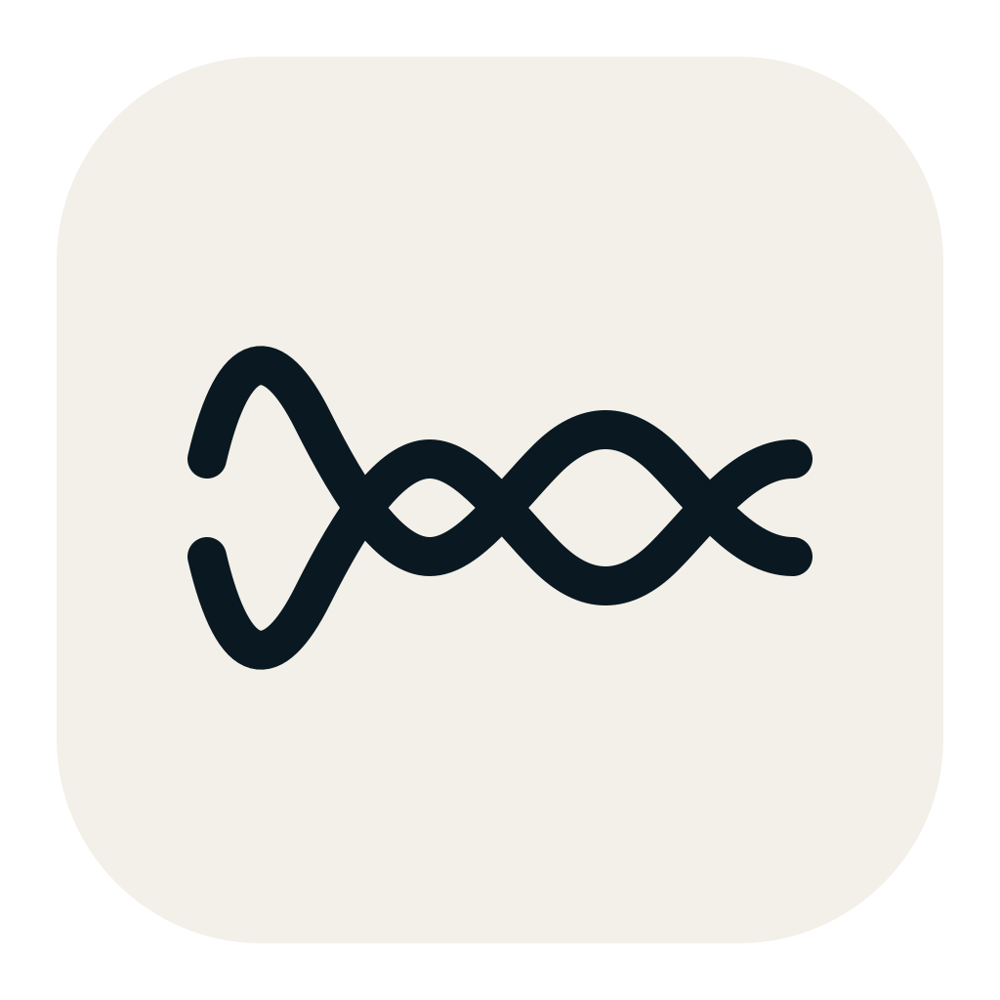

ELReverser
macOS · Android
Play it backwards.
Record or import sound, reverse it whole or in chunks, chain operations into a shareable scramble code, then decode it back to the original audio.
Made for little audio experiments.
Record & importCapture microphone input or open WAV, M4A, MP3, AIFF and OGG files.
Reverse & trimReverse the whole clip, split it into chunks, or trim from the waveform.
Chain & decodeCombine steps into a scramble code, save the audio, and undo it later.
Scramble codes stay readable.
SCR1:R reverses the full clip. SCR1:C0.5 reverses half-second chunks. Longer chains, such as SCR1:R-C0.5-R, store every step so the same operations can be replayed in reverse.